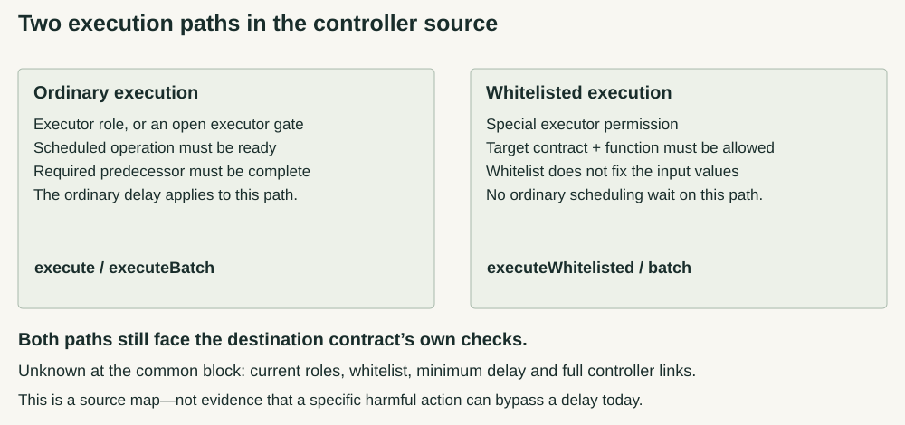

USDe Risk Audit · Research 3 · 13 September 2026
Question revision 2. What risks exist across USDe's mechanisms, smart contracts, protocols, integrations, and counterparties, and how can those risks combine and propagate through the system?
Unstaking is not the same as getting out.
On the inspected Ethereum route, the sUSDe shares you unstake are burned when the cooldown starts—not when it ends. What waits is a fixed amount of USDe. That decides whether you are still earning, what remains available to sell, and what another request changes.
Source research, not a live quote or a complete safety verdict. Current controller membership, backing and market liquidity are not established.
What changes for a holder?
| Moment | Consequence | Question that matters |
|---|---|---|
| You keep sUSDe | Your share count can stay flat while the USDe represented by it rises. | What is the USDe-per-share value—not just the token count? |
| You start cooldown | The requested shares burn. Their USDe amount is fixed and stops receiving later vault rewards. | What confirmed amount is now queued? |
| You add a request | The release time resets for the whole outstanding queue in that account. | Did the new request move an older claim's date? |
| You claim | The returned asset is USDe, not USDC, USDT or cash. | Which separate route reaches the asset you need? |
| You need a faster sale | Unburned sUSDe may be sold at an available market price. Already-queued shares no longer exist. | Is there an executable quote for what you still hold? |
| Rules may change | A controller's headline delay does not prove advance notice for every action. | Which role and execution path govern the particular change? |
Basis: inspected staking, ERC4626 and controller source paths [1] [2]. Market execution and current permissions were not measured.
First the shares burn. Then the clock runs.

With a positive cooldown setting, the ordinary one-step withdrawal functions are disabled. The cooldown functions calculate the conversion immediately, burn the requested shares and move the resulting USDe into a separate holding contract, the Silo. Your queue records underlying USDe, not still-earning sUSDe. The inspected custom contracts have no transferable queue receipt or cancellation function. A wrapper needs its own review. [1]
A second request is not a second independent timer. It adds to the outstanding USDe amount and replaces the account's common release time with the new request time plus the then-current duration. Even an already-mature but unclaimed amount can be made to wait again. The date can move earlier or later if the global duration has changed. A reverted transaction does not change the queue. [1]
After eligibility, the holder still submits a claim transaction. The inspected code has no short post-maturity expiry window that automatically restarts the wait. It releases the caller's full queued amount to the chosen receiver. An underlying transfer that reverts also rolls back the queue clearing; the separate boolean-return boundary is explained below. [1]
One day was an observation, not a promise. The accepted snapshot returned 86,400 seconds at Ethereum block 25,952,841, on 11 September 2026 at 08:03:35 UTC. The source allows an administrator to choose up to 90 days. A positive-duration change does not itself rewrite existing queue timestamps. A zero setting creates an immediate-claim exception; restoring a positive setting removes that exception for queues whose stored maturity has not arrived. [1] [3]
A flat share balance is not the same as no reward.
sUSDe is a non-rebasing share token in the inspected code. Funded rewards increase what a share represents rather than automatically adding shares to your wallet. The vault excludes unvested rewards from its accounted USDe balance and releases that exclusion over eight hours. The reward function rejects new funding while a positive remainder is still unvested. It distributes funded USDe; it does not promise an APY or verify off-chain backing. [1]
Three different units: suppose 100 sUSDe shares represent approximately 120 USDe at a hypothetical rate of 1.20 USDe per share. Unstaking fixes approximately 120 USDe, not 120 sUSDe or 120 dollars. If that USDe could later be sold at a hypothetical $0.98 each, gross proceeds would be approximately $117.60 before fees. Neither rate is an observed quote or forecast; exact on-chain conversion includes integer rounding. A PT maturity claim is another route and must be checked separately.
A reward illustration, not protocol balances: begin with 1,000 shares representing 1,000 accounted USDe. Another 80 USDe has been funded but is fully unvested. A holder queues 100 shares immediately: 100 USDe is fixed in the queue. With no other transactions, the remaining 900 shares eventually represent 980 USDe when the reward finishes vesting. The queued amount remains 100 USDe. Calculation inputs and scope.
The conversion is in USDe units, not dollars. A rising USDe-per-share figure does not guarantee a dollar sale price, reserve solvency or direct-redemption access. A displayed estimate is not confirmation that an exit transaction is available. [1] Earlier exit research.
Exact accounting and the maximum-withdrawal trap
Let B be the vault's USDe balance, U its unvested rewards and S its issued shares. Accounted assets are A = B − U. The inspected OpenZeppelin 4.9 implementation uses previewRedeem(q) = floor(q × (A + 1) / (S + 1)). Each 1 is one raw 18-decimal unit, not one whole token. Asset withdrawals round required shares upward; share redemptions round assets downward. Direct USDe donations can raise accounted assets outside reward vesting. The minimum nonzero share-supply check is global, not a one-share minimum per wallet. [1]
The inherited maxWithdraw and maxRedeem can remain nonzero while a positive cooldown disables direct withdrawals. ERC-4626 treats maxima and previews differently: maxima must account for restrictions, while previews intentionally ignore them. The staking contract's own documentation acknowledges its nonstandard positive-cooldown behavior. This is a source-level integration constraint, not a reproduced exploit or an observed application failure. [1] [5]
A blind patch that returns zero from those maximum getters would also break the cooldown functions, which use them as accounting bounds. An adapter needs to distinguish the available route from the amount represented by shares, and check restrictions and the existing queue. No deployment change is proposed or performed here.
Twelve original off-chain specification checks were byte-matched and rerun, and eight additional source-model checks passed, including 4,563 small-integer rounding cases within one test. These are hand-written models—not Solidity compilation, EVM or fork execution, live transactions, a security audit or a profitable-attack demonstration.
The Silo calls the underlying token's transfer without checking its returned boolean. A reverting transfer rolls back the enclosing claim; a hypothetical false-returning token would not be equivalent at this call site. This is a boundary on the explanation, not evidence that the configured USDe token returns false or that funds have been lost. The models did not test token-transfer execution. [1]
The control chain still has a consequential gap.
The previous report found the same owner address for USDe and Mint V2, but did not establish the complete route from the observed Safe to that controller. This run reads the source bundle associated with that owner, including its inherited scheduling and role administration. Source association is not successful same-block runtime or current-permission verification. The staking owner's identity at that block remains unconfirmed. [2] [3]

Ordinary execute functions call the inherited scheduling checks. Separate executeWhitelisted functions require a special executor role and a permitted target/function-selector pair. That whitelist does not bind all arguments or the amount of value sent; the destination's checks still apply. Adding and removing whitelist entries require the controller to call itself, and adding the controller as its own whitelisted target is rejected. [2]
Some source comments describe ordinary execution as bypassing the delay. The bodies do not: the separate whitelisted entry points do. The question is not simply whether a timelock exists, but which people or contracts can reach which consequential function, through which path, under the actual configuration? [2]
The inherited role administrator can grant or revoke roles. Constructor self-administration does not prove that no external administrator was granted a role later. The custom contract prevents renunciation, but its comment about revocation through the timelock is conditional on actual role membership. Complete history and pinned role reads remain necessary; this report does not assert an external administrator exists. [2]
A delay is not automatically a usable escape window. A holder must notice an action, submit transactions, finish any queue and still reach the needed asset. Equal headline waits would leave no positive operational margin before those other steps. This is a timing argument, not a finding that every current control and exit delay equals one day.
Restrictions change with the stage of the claim
The inspected staking code can restrict deposits and share transfers or withdrawals; an administrator can redistribute a fully restricted holder's share balance under specified conditions. Pending-admin handover differs from the controller's role system. After shares have burned into a queue, the claim function has no fresh full-restriction-role check; the Silo checks its immutable staking caller. These are different surfaces, not one universal freeze switch. They establish neither current membership nor legal entitlement or immunity from other risks. The staking contract's generic token-rescue function excludes the underlying asset. [1]
What this does—and does not—settle
Established at the inspected-source level: when shares burn, what the queue stores, why later rewards exclude it, how another request changes its timestamp, principal rounding rules and the separate ordinary/whitelisted execution paths.
Still open: current controller role sets and whitelist pairs; the complete upstream Safe/controller chain; staking owner and Silo runtime at the common block; Safe implementation, modules, guard and fallback; complete role/whitelist history; and executable sale/redemption conditions. Historical requests were denied. Denial is not evidence of an empty role set or an inactive fast path.
The core staking source retains the previous report's provider/runtime cross-check, not a new independent rebuild. The new owner-associated source was not independently matched to runtime at the common block. Older getter pages were not substituted for failed reads. No current backing reconciliation, loss probability, universal safety grade or personalized trade recommendation follows.
Moving USDe from the vault to the Silo is not itself a payment of external backing assets. A later redemption must not automatically be counted as a second independent backing outflow without tracing the same flow. A governance proposal supplies context, not proof of today's liquidity or execution. [4]
An unconfirmed transaction is different from a confirmed cooldown that has not matured. A displayed timer cannot diagnose signing errors. Official support should not require a recovery phrase. This page asks for no wallet connection or transaction.
Evidence and reproducibility
[1] Staking source. Sourcify bundle for Ethereum sUSDe. Supplied evidence reread on 13 September 2026: StakedUSDe, StakedUSDeV2, USDeSilo, SingleAdminAccessControl, custom interfaces and the ERC4626 conversion/withdrawal path. Compiler metadata: Solidity 0.8.19, Paris, optimizer 20,000 runs. Selected imports are not a complete dependency security audit. Earlier provenance: dated control snapshot.
[2] Owner-associated source. Sourcify bundle for the observed owner. Supplied retrieval ended 12 September 2026 at 14:06:08 UTC. Reviewed custom EthenaTimelockController, inherited TimelockController, AccessControl and ReentrancyGuard. Source association and declared metadata hashes are not an independent same-block runtime match or proof of current roles.
[3] Dated observation. Run-2 curated Ethereum snapshot: block 25,952,841, 11 September 2026 at 08:03:35 UTC. Returned getters and missing checks remain distinct; the snapshot is not relabelled current.
[4] Governance context. March 2026 dynamic-cooldown proposal and adviser discussion. Proposal and analysis, not a deployment receipt, present liquidity statement or market-execution test.
[5] Interface standard. ERC-4626, maxWithdraw, maxRedeem and preview sections, read 13 September 2026. The standard's requirements are distinct from the behavior of the inspected implementation.
Curated mechanics, limits and calculation data · Evidence method · All research